Project record · October 30 – November 4, 2026
We put
the glass in.
The new website, concept films, reels and domain launch for Commercial Glazing Contractors Inc. What we built, how it was checked, and what is still waiting on the owner.
Livecgcontractorsinc.com, on Vercel
98Lighthouse mobile performance (100 accessibility, best practices, SEO)
6concept films generated locally
5finished 9:16 reels
76real CGC job photos in the gallery
3domains, 6 hostnames, HTTPS on all
31/31API tests passing
87small commits, each one reversible
Prepared for CGC · Commercial Glazing Contractors Inc. · CSLB C-17 #1109661
01 / Summary
Where it stands
The site is live at cgcontractorsinc.com. The two older domains, commercialglazingcontractorsinc.com and cgclimited.com, and every www address now forward to it, keeping the page and query. Company email (Microsoft 365 behind Proofpoint) was not touched and still accepts mail.
The design is black, white and graphite, set in Geist. A concept film opens the page, real job photos carry the gallery, and the bid form sits one click from anywhere. Every generated image or film is labeled as a concept, never passed off as a finished CGC job.
Done
- Website designed, built, tested and promoted to production four times, each on the owner's go.
- Six concept films made on the local GPU and cut into a 27-second hero reel, a scroll-built "floor by floor" section and a walk-in loop.
- Logo v3: interlocking rings and a light wordmark, drawn in on load and in the footer.
- Motion layer: first-visit loader, animated buttons, smooth scroll, word-by-word headlines, photo reveals, before/after sliders, live glass-weight pane, process timeline.
- Five reels for Instagram and TikTok: three film reels, a logo sting and a louder 15-second showreel.
- SEO and speed pass: regional title, structured data, social cards, Lighthouse 98 / 100 / 100 / 100 on mobile.
- DNS moved from GoDaddy to Vercel for all three domains, with full backups of the old records.
Waiting on the owner
- CRM and bid form storage. Both are built and tested, but they need a Vercel Blob store and a
CRM_KEY passphrase before they can save leads. Until then the form shows the phone and email instead.
- MiniMax commercial license for the films made with the H3 model, which are now public.
- Git push of the local history, Web Analytics on or off, and cleanup of a stray Vercel project named
site.
02 / Timeline
Six days, start to launch
| Day | Work |
|---|
| Oct 30 | Kept the supplied API, legal pages and brief. Sorted 90 photos and exported project media and field clips. Built the phone-first CRM desk, the first storefront site and the media injector. Hit the mobile speed and accessibility targets. Tested forms, layouts and fallbacks. |
| Oct 31 | Moved SMS consent next to the contact fields. Added generated before/after concept comparisons. Replaced the 3D hero with a cinematic film and the bright architectural design. Hardened the API's JSON and size checks. Rendered the first concept film ("The Reflection Run"), compressed it and kept the poster as the fastest-loading image. |
| Nov 1 | Re-audited the AVIF hero on phones. Wrote the "In Plain Sight" interior-glass concept and a ground-up storefront storyboard. |
| Nov 2 | Rendered "The Threshold" v4 shot by shot against strict shot cards. Tried "The Lift" as a single-concept hero. Explored four logo directions and settled on logo v3. Cut five concepts into one hero reel. |
| Nov 3 | Showed the whole film frame instead of a zoomed crop. SEO audit, lighter fonts, schema and social tags. Full-bleed hero, then the Gallery mono redesign the owner picked. Added films S1, S2 and G, the rebuilt sliders and the motion layer. Rendered the first four reels. Added the loader, animated buttons, smooth scroll and cursor ring. Promoted to production three times. |
| Nov 4 | Pointed all three domains at Vercel, issued HTTPS certificates and set the 308 redirects. Confirmed email still flows. Replaced the grey hero side bands with a blurred film fill and promoted it. Rendered the v2 showreel. Wrote this record. |
03 / The website
Design direction: Gallery mono
Three directions were mocked up; the owner chose Gallery. That means black, white and graphite only, Geist for type, Geist Mono for small labels, and white-on-dark and black-on-light buttons. Brass from the logo was tried and dropped, because the site doesn't need to match the logo's colors. The header is clear over the film and turns into a dark frosted bar once you scroll past it.
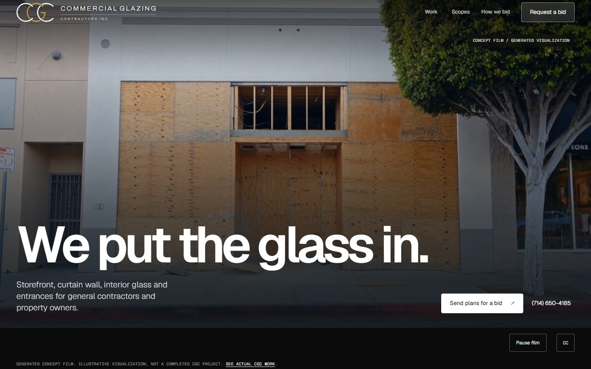
Desktop hero, 1440×900. The film plays muted, with chapters, captions and a pause control. The headline is "We put the glass in."
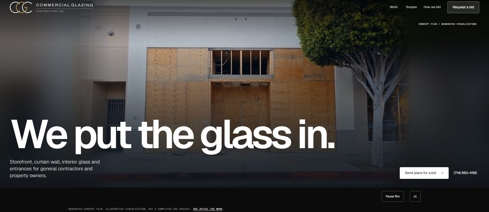
Wide windows (2000×870). The film stays whole and sharp, and the sides fill with a blurred copy of it instead of grey bars. Shipped Nov 4.
03 / The website
Page by page
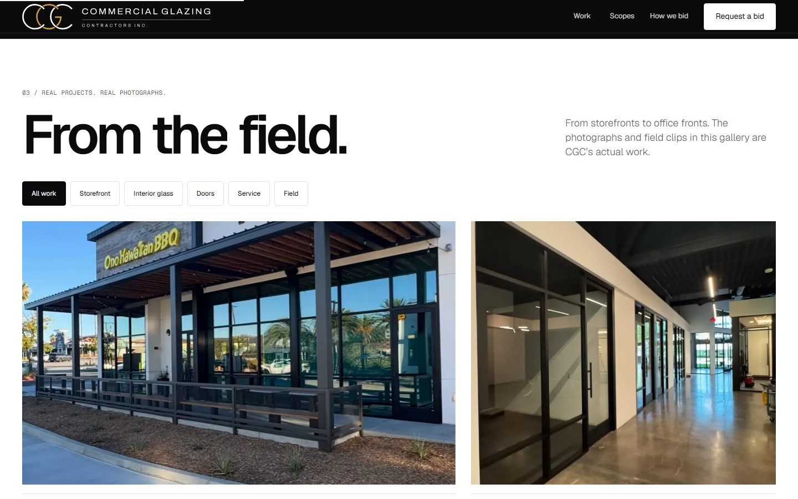
From the field. 76 real job photos with filters for storefront, interior glass, doors, service and field. Six show first, with "Show more" for the rest.
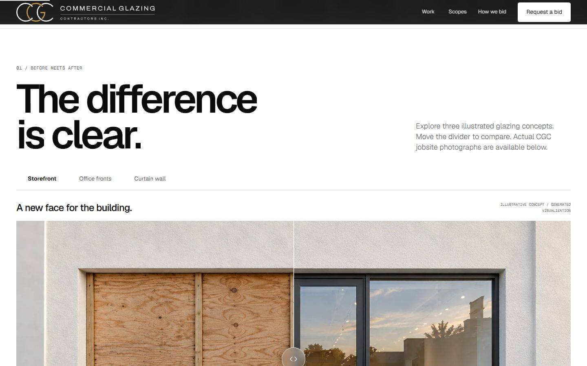
The difference is clear. Three illustrated before/after concepts. The divider follows the mouse on desktop and swipes on phones; tapping doesn't make it jump.
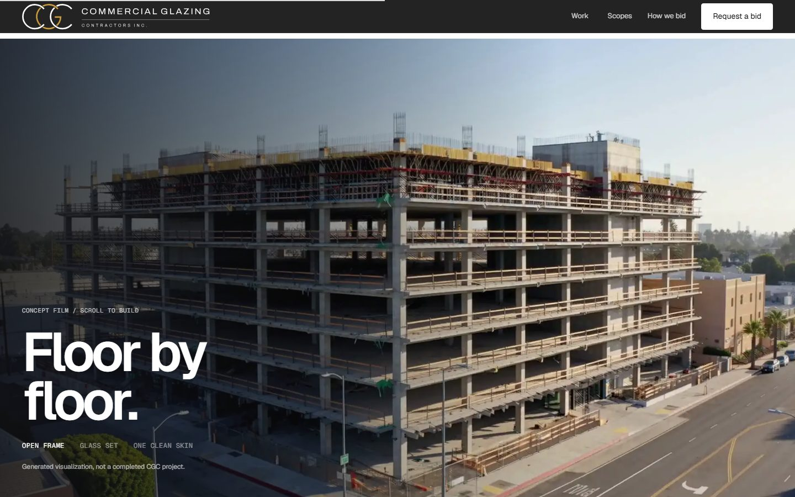
Floor by floor. The S1 film plays as you scroll, 81 frames from bare frame to finished glass skin.
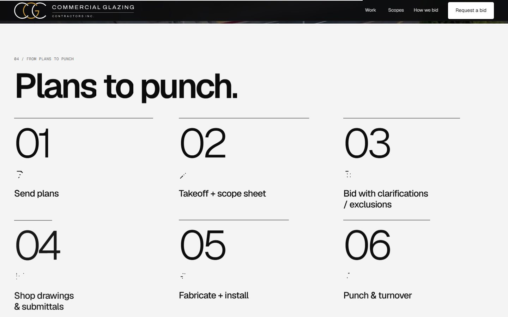
Plans to punch. Six steps from plans to turnover. Each line icon draws in as its step comes into view.
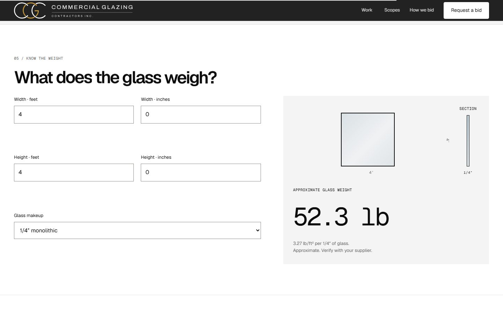
What does the glass weigh? A calculator with a live pane that resizes and shows the glass build-up.
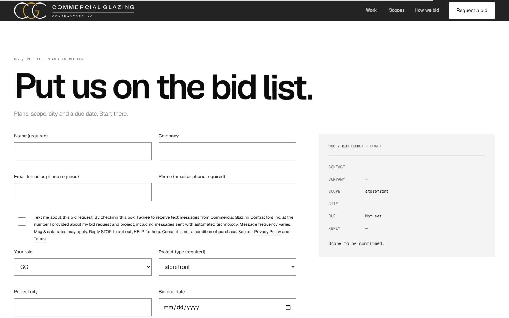
Put us on the bid list. The bid form fills in a live "bid ticket" as you type. SMS consent is optional and unchecked.
03 / The website
FAQ, footer and phones
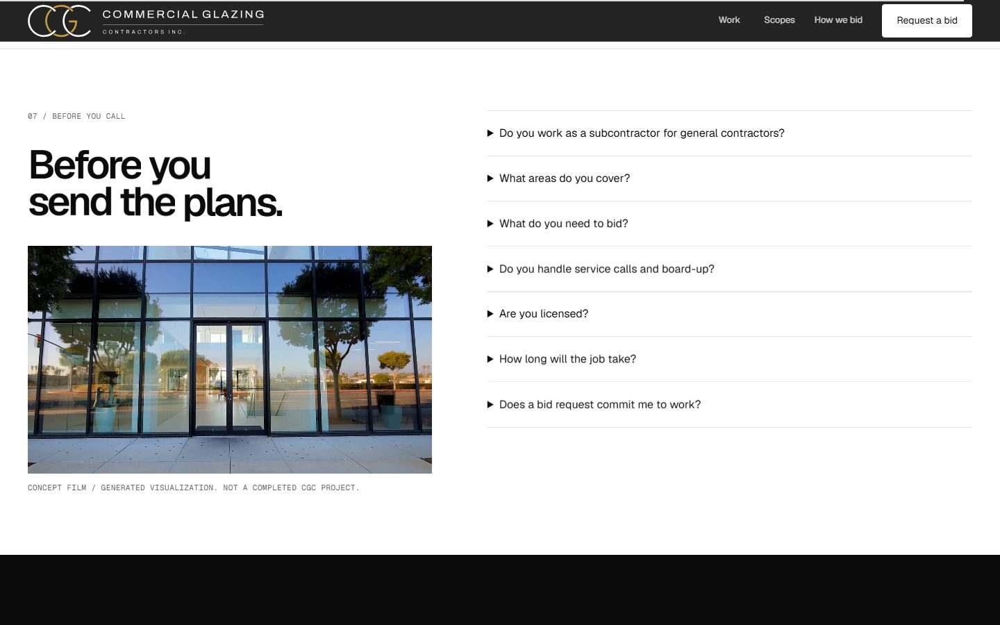
Before you send the plans. The FAQ, with the S2 walk-in film looping beside it while it's on screen.
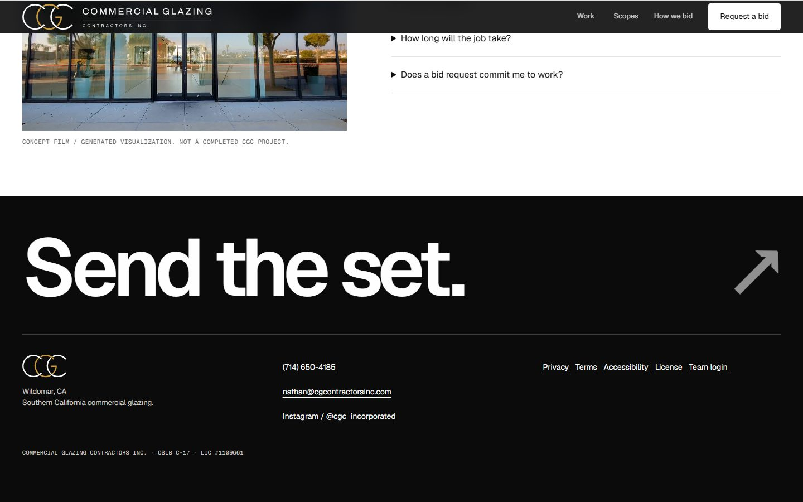
Send the set. The footer: the logo rings draw in, plus contact details, legal pages and the team login.
On a phone (390 px wide): the hero, the gallery and the bid form. No sideways scrolling, every tap target is at least 44 px, and form fields are at least 16 px so iPhones don't zoom in.
04 / Motion and interaction
The high-end layer
| Feature | What it does |
|---|
| First-visit loader | The logo rings draw in with a counter on the first visit only. It always lets go of the page by 3.2 seconds, even in a background tab. |
| Animated buttons | The label rolls, a sweep passes and the arrow flies out on hover. Buttons lean slightly toward the cursor on desktop. |
| Logo draw-in | The rings draw stroke by stroke and the wordmark wipes in, in the header, the loader and the footer. |
| Smooth scroll | Lenis smooth scrolling on desktop only. Phones keep normal scrolling. |
| Headlines | Section titles rise in word by word behind a mask. |
| Photo reveals | Gallery photos open with a clip reveal as they scroll in. |
| Progress line and cursor ring | A thin line at the top shows how far down the page you are. A ring follows the cursor on desktop. |
| Scopes marquee | Storefront / Curtain wall / Interior glass / Office fronts / Entrances / Doors / Service and repair, scrolling past. |
| Scope hover loops | Hovering a scope row plays a real field clip, never a generated one. |
| Before/after sliders | Rebuilt: they follow the mouse on hover, swipe on touch and glide once the first time they're seen. |
| Live glass pane | The calculator's pane resizes to scale and shows the glass layers. |
| Wide-window film fill | On very wide screens a 48×27 copy of the film, blurred, fills the sides. The sharp frame's edges are faded into it. |
Visitors who ask for reduced motion get still images and no loader, smooth scroll or film. Without JavaScript the page still works, with the poster image in place of the film.
05 / Concept films
Six films, made on the local GPU
Every film was generated on MOMOBEAST (WanGP with Wan 2.2, then MiniMax H3), checked shot by shot and labeled "Concept film / generated visualization" on the page. Real CGC work stays in the photo gallery.
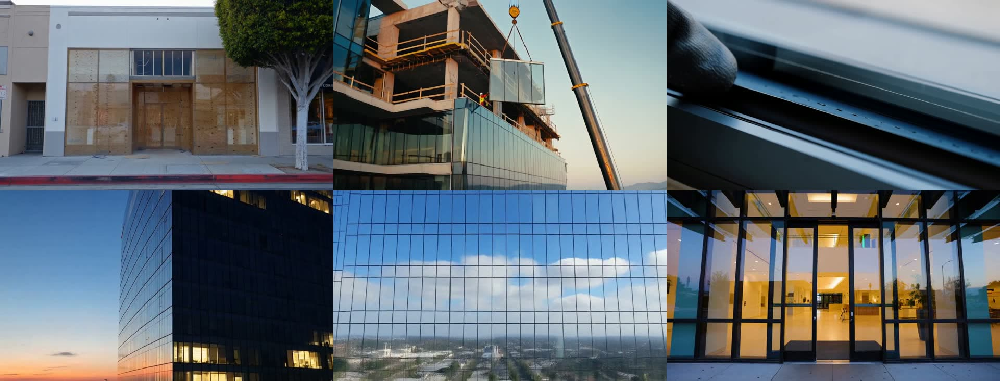
The hero reel, 27.3 s with 0.4 s fades between six chapters: Plywood to storefront · Lifted into place · The seal · Lit floor by floor · One clean skin · The entrance. Desktop and phone versions, both MP4 and WebM, with captions.
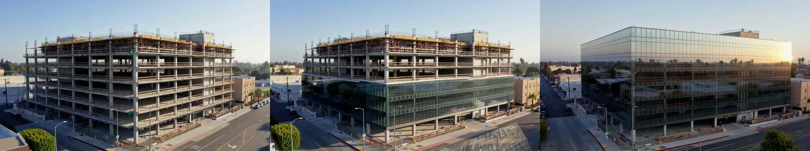
S1, "Floor by floor": a one-take film of a bare frame becoming a glass building, played by scrolling. It uses 81 WebP frames per size and loads only when you get near it.
Along the way
- The Reflection Run and The Threshold v3 and v4 were earlier hero films. They're kept for rollback.
- The Lift was tried as a single-concept hero, then folded into the reel.
- Shots were cut for showing printed glove text, for having people on a roof edge, and for door leaves that wouldn't stay still.
06 / Reels
Five reels, 9:16
Built as code with the motion-studio pipeline: every frame is calculated from the time, then rendered at 1080×1920, 30 fps. There's no voiceover or music in the masters; add platform audio when posting. Every film shot carries the concept-film label.
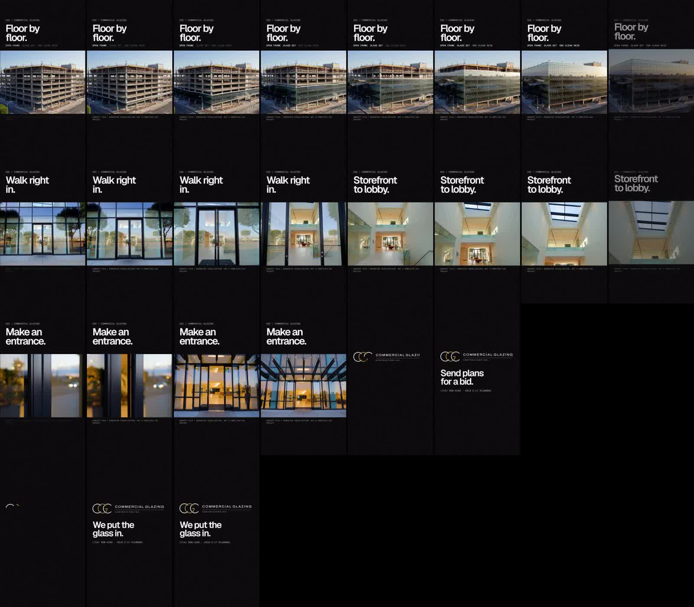
v1 reels: S1 "Floor by floor." (12.4 s), S2 "Walk right in. / Storefront to lobby." (12.4 s), G "Make an entrance." (7.5 s) and the logo sting "We put the glass in." (4.2 s). Each ends on the logo, "Send plans for a bid." and the phone number with CSLB #.
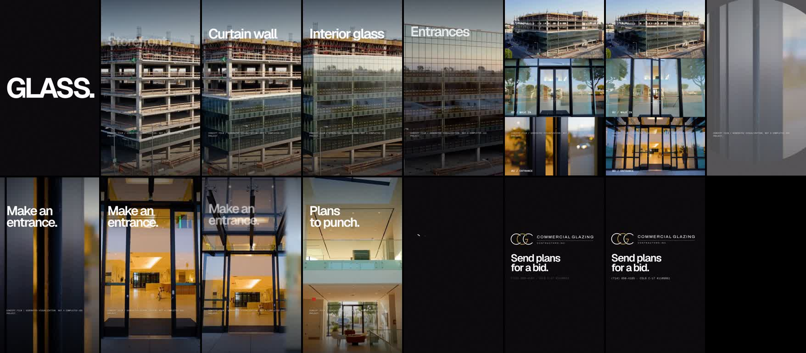
v2 showreel, 15 s, the louder cut. The steps: "GLASS." slams in → a white flash → S1 full-bleed with the scopes flipping past → three films stacked as sliding strips → a flash → G opens through an expanding circle → S2 whips in with a fast push → the end card.
| File | Length | Size |
|---|
| CGC-s1-v1-9x16.mp4 | 12.4 s | 18 MB |
| CGC-s2-v1-9x16.mp4 | 12.4 s | 18 MB |
| CGC-g-v1-9x16.mp4 | 7.5 s | 8 MB |
| CGC-sting-v1-9x16.mp4 | 4.2 s | 2 MB |
| CGC-showreel-v2-9x16.mp4 | 15.0 s | 37 MB |
07 / Brand, search and speed
Logo v3
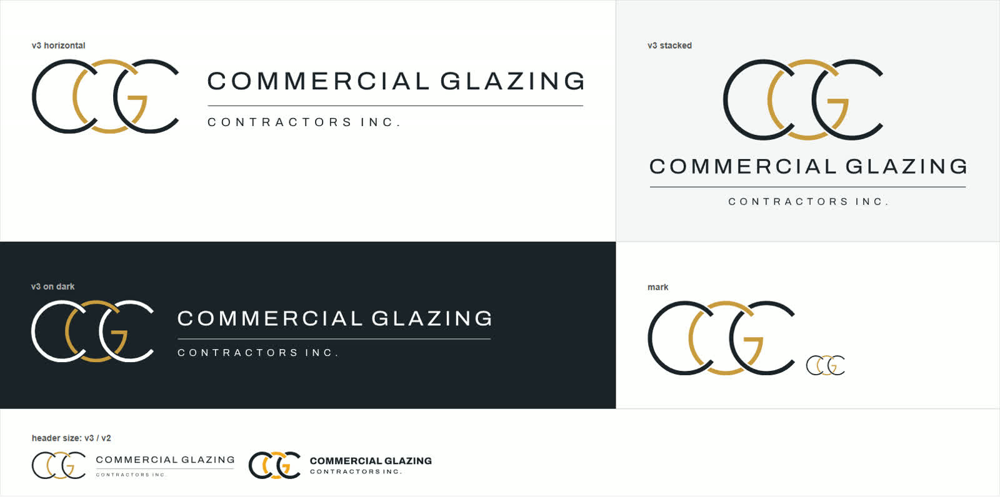
Logo v3: three interlocking rings forming CGC, with "Commercial Glazing / Contractors Inc." set light and spaced. It comes in light and dark versions, as the mark alone or as the wordmark alone. It was chosen over v2 (woven rings) and four other directions.
Search and speed
| Check | Result |
|---|
| Lighthouse, mobile | 98 performance · 100 accessibility · 100 best practices · 100 SEO |
| Lighthouse, desktop | 99 · 100 · 100 · 100 |
| Accessibility (axe) at 360, 390, 430 and 1440 px | 0 violations, 0 overflow, 0 console errors |
| Structured data | WebSite and GeneralContractor, with a regional title and description |
| Social cards | Open Graph and Twitter tags on every page, including the legal pages |
| Weight | Self-hosted fonts (79 KB), AVIF posters, a 900 px gallery size for phones, gzip |
08 / Domains and email
Launch on cgcontractorsinc.com
DNS stays at GoDaddy, in CGC's account, reached through delegate access. Only the website records changed; the mail records were left alone. Every original record was saved before the change, with steps to roll it back (dns-backup/).
| Hostname | Points to | HTTPS | Behavior |
|---|
| cgcontractorsinc.com | 216.150.1.1, 216.150.16.1 | Yes | Serves the site |
| www.cgcontractorsinc.com | Vercel CNAME | Yes | 308 → cgcontractorsinc.com |
| commercialglazingcontractorsinc.com | 216.150.1.1 (was parked) | Yes | 308 → cgcontractorsinc.com |
| www.commercialglazingcontractorsinc.com | Vercel CNAME | Yes | 308 → cgcontractorsinc.com |
| cgclimited.com | 216.150.1.1 (was a GoDaddy builder page) | Yes | 308 → cgcontractorsinc.com |
| www.cgclimited.com | follows cgclimited.com | Yes | 308 → cgcontractorsinc.com |
Redirects keep the path and query: cgclimited.com/license/?ref=x lands on cgcontractorsinc.com/license/?ref=x. They're set on each domain in Vercel, because rules in the site's own config lost out to cached pages.
Email
Microsoft 365 behind Proofpoint is unchanged. That covers the three MX records, the SPF and Microsoft TXT records, and autodiscover, Lync and SIP. Both Proofpoint servers accepted mail for postmaster@cgcontractorsinc.com after the switch. The check was a handshake only; no message was sent.
cgcincorporated.com belongs to a different company (Commercial Glazing Concepts, Bay Area) and was left alone.
09 / CRM and open items
What the owner still decides
CRM and the bid form
The CRM is at cgcontractorsinc.com/crm. It's built for phones and covers leads and jobs, stages, notes, CSV import and archiving, with 31 API tests passing. It needs two things before it opens:
- A private Vercel Blob store connected to the
cgc-glazing project, where leads are saved.
- A
CRM_KEY environment variable, at least 12 characters. That's the passphrase typed at /crm.
Then redeploy, send a test lead marked as a test, and check it shows up in /crm. Email alerts are optional and need RESEND_API_KEY, LEAD_NOTIFY_TO and REPORT_FROM. Until the store exists, the bid form tells visitors to call or email, and gives a prefilled email link.
Open items
| Item | Status |
|---|
| Blob store and CRM_KEY | Owner creates them (they're credentials) |
| MiniMax commercial license for the H3 films now public | Owner to buy (sold through Comfy) |
| Push the local git history (about 87 commits) | Waiting on the owner's go |
| Vercel Web Analytics | Off. Owner decides. |
Stray Vercel project site from an early deploy | Owner approves deleting it |
Old protection-bypass token from an early vercel curl | Owner reviews and revokes it |
| Logo v3 on the favicon and in the CRM | Next small task |
Legal checklist (site/LEGAL-NOTES.md), Google Business Profile, review QR | Owner's details needed |
10 / Files and rebuilds
Where everything lives
Path (under Projects/Dd/cgc) | What |
|---|
site/ | The deployed site: index, legal pages, CRM, API, assets |
_work/architectural.py | Rebuilds site/index.html from the parts below. Run python cgc/_work/architectural.py. |
_work/architectural.css / .js / -hero.html | Design, motion and hero markup |
_work/hero-h3/build_reel.py | Cuts concept clips into the hero reel |
_work/motion/ | Reel scenes (s1, s2, g, sting, showreel), the renderer, and finals in out/ |
dns-backup/ | Original GoDaddy records and rollback steps |
STATUS.md | Running log of every release |
seo-audit/ | Full SEO audit report and Lighthouse runs |
site/_test/ | npm test (API), plus motion, QA, film-hero and functional browser tests |
Shipping a change
- Edit the files in
_work/, rebuild with architectural.py, then run npm test and node motion.mjs in site/_test.
- From
cgc/site, run vercel deploy --project cgc-glazing --target preview. Always name the project.
- Check the preview, then
vercel promote <preview-url>. Only on the owner's go.
Prepared November 4, 2026. Production deployment cgc-glazing-n3ycqq5n1.